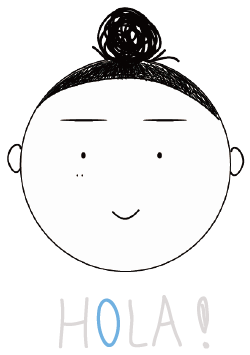

1997/12/05臺灣 桃園人
元智大學 資訊傳播學系大園國際高中 西班牙文組
e-mail : sunnyforest00@gmail.com
中文英文(GEPT 中級、TOEIC 650分)西班牙文(SFLPT A1)
Adobe Photoshop、IllustratorAdobe PremiereHTML、CSS、JavaScript、jQueryphp、Arduino
攝影、聽音樂、彈鋼琴、組樂高拼圖、騎怎踏車、登山
您好，我是洪宛鈴，來自桃園畢業於元智大學資訊傳播學系科技組當初高中學了三年的西班牙文，之後在選擇系所時，隨著網際網路、人工智慧與機器人的快速發展，覺得未來趨勢會是在資訊科技領域，本身也對傳播方面有興趣，所以選擇了這個科系。
我的個性沉穩、外向、努力態度積極主動、責任心強、反應力快有獨立學習能力，具有團隊溝通、合作的能力。 在軟體應用上，能夠流暢地使用Illustrator、PhotoShop、Premiere、Arduino及Office等軟體。網頁程式上能夠使用CSS、HTMLJavaScript、jQuery、php大學裡不只學到軟體技術、程式設計、網頁撰寫、互動裝置的能力，學習態度也進步許多。由於學的東西很廣泛因此我認為自主學習非常重要，自己要想辦法找尋答案去解決問題，勇於表達、擅長互動在系上有許多實作的機會，需要有創意隨時迸發新想法而為了讓每個作品更趨近完美，懂得接納不同意見，並樂於接受新資訊，以此提高作品水準。
在大學期間參加了志工性社團在社團裡學習到了如何籌辦活動、撰寫企劃、簡報宣傳以及良好的交際能力的重要性。在擔任桃園電影節志工的場務組以及打工的過程中，學到了許多平常學不到的東西不僅能提升口語表達的能力，也更加了解在各種問題中該如何靈機應變也學會和不同個性的人一起工作學習。最重要的是，將熱情與專業的服務帶給民眾。除了學校的課內學習，我還有主動積極地去報名參與競賽，挑戰自我、累積實力在過程中學習到團隊合作以及自我負責的重要性，提升自我能力，必須把自己所負責的部分以及有興趣的事務做到最好，這樣才不會為團隊造成困擾，無論遇到什麼樣的困難都會想盡辦法努力一起克服逆境達成目標。